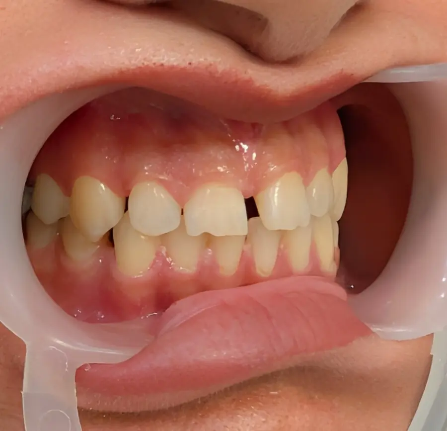

نسخه استخراجشده؛ ترجمه یا تأیید علمی انجام نشده است. وضعیت: captured
بیمار با شکایت زیبایی مراجعه کرده است. در معاینه، یک دیاستم در ناحیهی میدلاین بین دندانهای سانترال وجود دارد و در ناحیهی دیستال سانترال نیز فضا دیده میشود. عرض دندانها در محدودهی نرمال است. آیا دیاستم را مستقیم با لمینیت میبندی؟

بستن دیاستم با لمینیت بهصورت مستقیم باعث افزایش عرض سانترالها میشود. چون بیمار به ابعاد نرمال دندانهای خود عادت دارد، پهن شدن دندانها میتواند از نظر ذهنی و زیباییشناختی برای او قابل پذیرش نباشد.
در مجموع، درمان زیبایی مستقیم در این وضعیت یا به دندانهای بیش از حد پهن میرسد، یا تراش زنجیرهای و غیرمحافظهکارانه از سطوح دیستال دندانهای قدامی را لازم دارد.
بیمار ابتدا برای درمان ارتودنسی ارجاع داده شد تا فضاها بهصورت اصولی و متناسب توزیع شوند. پس از اصلاح موقعیت دندانها، امکان انجام ماکآپ و ارزیابی نتیجهی نهایی زیبایی فراهم میشود.
ترتیب درست: اول ارتودنسی، بعد ماکآپ، آخر پروتز؛ تا نتیجهی زیبایی پیش از ورود به فاز درمان پروتزی و تحمیل هزینه به بیمار ارزیابی شود.